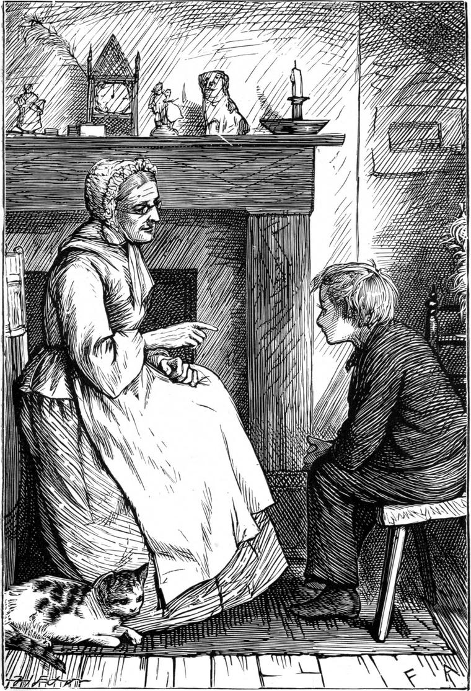

Willie was a good deal more than nine years of age before he could read a single word. It was not that he was stupid, as we shall soon see, but that he had not learned the good of reading, and therefore had not begun to wish to read; and his father had unusual ideas about how he ought to be educated. He said he would no more think of making Willie learn to read before he wished to be taught than he would make him eat if he wasn't hungry. The gift of reading, he said, was too good a thing to give him before he wished to have it, or knew the value of it. "Would you give him a watch," he would say, "before he cares to know whether the sun rises in the east or the west, or at what hour dinner will be ready?"
Now I am not very sure how this would work with some boys and girls. I am afraid they might never learn to read until they had boys and girls of their own whom they wanted to be better off than, because of their ignorance, they had been themselves. But it worked well in Willie's case, who was neither lazy nor idle. And it must not be supposed that he was left without any education at all. For one thing, his father and mother used to talk very freely before him—much more so than most parents do in the presence of their children; and nothing serves better for teaching than the conversation of good and thoughtful people. While they talked, Willie would sit listening intently, trying to understand what he heard; and although it not unfrequently took very strange shapes in his little mind, because at times he understood neither the words nor the things the words represented, yet there was much that he did understand and make a good use of. For instance, he soon came to know that his father and mother had very little money to spare, and that his father had to work hard to get what money they had. He learned also that everything that came into the house, or was done for them, cost money; therefore, for one thing, he must not ill-use his clothes. He learned, too, that there was a great deal of suffering in the world, and that his father's business was to try to make it less, and help people who were ill to grow well again, and be able to do their work; and this made him see what a useful man his father was, and wish to be also of some good in the world. Then he looked about him and saw that there were a great many ways of getting money, that is, a great many things for doing which people would give money; and he saw that some of those ways were better than others, and he thought his father's way the very best of all. I give these as specimens of the lessons he learned by listening to his father and mother as they talked together. But he had another teacher.
Down the street of the village, which was very straggling, with nearly as many little gardens as houses in it, there was a house occupied by several poor people, in one end of which, consisting just of a room and a closet, an old woman lived who got her money by spinning flax into yarn for making linen. She was a kind-hearted old creature—widow, without any relation near to help her or look after her. She had had one child, who died before he was as old as Willie. That was forty years before, but she had never forgotten her little Willie, for that was his name too, and she fancied our Willie was like him. Nothing, therefore, pleased her better than to get him into her little room, and talk to him. She would take a little bit of sugar-candy or liquorice out of her cupboard for him, and tell him some strange old fairy tale or legend, while she sat spinning, until at last she had made him so fond of her that he would often go and stay for hours with her. Nor did it make much difference when his mother begged Mrs Wilson to give him something sweet only now and then, for she was afraid of his going to see the old woman merely for what she gave him, which would have been greedy. But the fact was, he liked her stories better than her sugar-candy and liquorice; while above all things he delighted in watching the wonderful wheel go round and round so fast that he could not find out whether her foot was making it spin, or it was making her foot dance up and down in that curious way. After she had explained it to him as well as she could, and he thought he understood it, it seemed to him only the more wonderful and mysterious; and ever as it went whirring round, it sung a song of its own, which was also the song of the story, whatever it was, that the old woman was telling him, as he sat listening in her high soft chair, covered with long-faded chintz, and cushioned like a nest. For Mrs Wilson had had a better house to live in once, and this chair, as well as the chest of drawers of dark mahogany, with brass handles, that stood opposite the window, was part of the furniture she saved when she had to sell the rest; and well it was, she used to say, for her old rheumatic bones that she had saved the chair at least. In that chair, then, the little boy would sit coiled up as nearly into a ball as might be, like a young bird or a rabbit in its nest, staring at the wheel, and listening with two ears and one heart to its song and the old woman's tale both at once.
One sultry summer afternoon, his mother not being very well and having gone to lie down, his father being out, as he so often was, upon Scramble the old horse, and Tibby, their only servant, being busy with the ironing, Willie ran off to Widow Wilson's, and was soon curled up in the chair, like a little Hindoo idol that had grown weary of sitting upright, and had tumbled itself into a corner.

Now, before he came, the old woman had been thinking about him, and wishing very much that he would come; turning over also in her mind, as she spun, all her stock of stories, in the hope of finding in some nook or other one she had not yet told him; for although he had not yet begun to grow tired even of those he knew best, it was a special treat to have a new one; for by this time Mrs Wilson's store was all but exhausted, and a new one turned up very rarely. This time, however, she was successful, and did call to mind one that she had not thought of before. It had not only grown very dusty, but was full of little holes, which she at once set about darning up with the needle and thread of her imagination, so that, by the time Willie arrived, she had a treat, as she thought, quite ready for him.
I am not going to tell you the story, which was about a poor boy who received from a fairy to whom he had shown some kindness the gift of a marvelous wand, in the shape of a common blackthorn walking-stick, which nobody could suspect of possessing such wonderful virtue. By means of it, he was able to do anything he wished, without the least trouble; and so, upon a trial of skill, appointed by a certain king, in order to find out which of the craftsmen of his realm was fittest to aid him in ruling it, he found it easy to surpass every one of them, each in his own trade. He produced a richer damask than any of the silk-weavers; a finer linen than any of the linen-weavers; a more complicated as well as ornate cabinet, with more drawers and quaint hiding-places, than any of the cabinet-makers; a sword-blade more cunningly damasked, and a hilt more gorgeously jewelled, than any of the sword-makers; a ring set with stones more precious, more brilliant in colour, and more beautifully combined, than any of the jewellers: in short, as I say, without knowing a single device of one of the arts in question, he surpassed every one of the competitors in his own craft, won the favour of the king and the office he wished to confer, and, if I remember rightly, gained at length the king's daughter to boot.
For a long time Willie had not uttered a single exclamation, and when the old woman looked up, fancying he must be asleep, she saw, to her disappointment, a cloud upon his face—amounting to a frown.
"What's the matter with you, Willie, my chick?" she asked. "Have you got a headache?"
"No, thank you, Mrs Wilson," answered Willie; "but I don't like that story at all."
"I'm sorry for that. I thought I should be sure to please you this time; it is one I never told you before, for I had quite forgotten it myself till this very afternoon. Why don't you like it?"
"Because he was a cheat. He couldn't do the things; it was only the fairy's wand that did them."
"But he was such a good lad, and had been so kind to the fairy."
"That makes no difference. He wasn't good. And the fairy wasn't good either, or she wouldn't have set him to do such wicked things."
"They weren't wicked things. They were all first-rate—everything that he made—better than any one else could make them."
"But he didn't make them. There wasn't one of those poor fellows he cheated that wasn't a better man than he. The worst of them could do something with his own hands, and I don't believe he could do anything, for if he had ever tried he would have hated to be such a sneak. He cheated the king, too, and the princess, and everybody. Oh! shouldn't I like to have been there, and to have beaten him wand and all! For somebody might have been able to make the things better still, if he had only known how."
Mrs Wilson was disappointed—perhaps a little ashamed that she had not thought of this before; anyhow she grew cross; and because she was cross, she grew unfair, and said to Willie—
"You think a great deal of yourself, Master Willie! Pray what could those idle little hands of yours do, if you were to try?"
"I don't know, for I haven't tried," answered Willie.
"It's a pity you shouldn't," she rejoined, "if you think they would turn out so very clever."
She didn't mean anything but crossness when she said this—for which probably a severe rheumatic twinge which just then passed through her shoulder was also partly to blame. But Willie took her up quite seriously, and asked in a tone that showed he wanted it accounted for—
"Why haven't I ever done anything, Mrs Wilson?"
"You ought to know that best yourself," she answered, still cross. "I suppose because you don't like work. Your good father and mother work very hard, I'm sure. It's a shame of you to be so idle."
This was rather hard on a boy of seven, for Willie was no more then. It made him look very grave indeed, if not unhappy, for a little while, as he sat turning over the thing in his mind.
"Is it wrong to play about, Mrs Wilson?" he asked, after a pause of considerable duration.
"No, indeed, my dear," she answered; for during the pause she had begun to be sorry for having spoken so roughly to her little darling.
"Does everybody work?"
"Everybody that's worth anything, and is old enough," she added.
"Does God work?" he asked, after another pause, in a low voice.
"No, child. What should He work for?"
"If everybody works that is good and old enough, then I think God must work," answered Willie. "But I will ask my papa. Am I old enough?"
"Well, you're not old enough to do much, but you might do something."
"What could I do? Could I spin, Mrs Wilson?"
"No, child; that's not an easy thing to do; but you could knit."
"Could I? What good would it do?"
"Why, you could knit your mother a pair of stockings."
"Could I though? Will you teach me, Mrs Wilson?"
Mrs Wilson very readily promised, foreseeing that so she might have a good deal more of the little man's company, if indeed he was in earnest; for she was very lonely, and was never so happy as when he was with her. She said she would get him some knitting-needles—wires she called them—that very evening; she had some wool, and if he came to-morrow, she would soon see whether he was old enough and clever enough to learn to knit. She advised him, however, to say nothing about it to his mother till she had made up her mind whether or not he could learn; for if he could, then he might surprise her by taking her something of his own knitting—at least a pair of muffetees to keep her wrists warm in the winter. Willie went home solemn with his secret.
The next day he began to learn, and although his fingers annoyed him a good deal at first by refusing to do exactly as he wanted them, they soon became more obedient; and before the new year arrived, he had actually knitted a pair of warm white lamb's-wool stockings for his mother. I am bound to confess that when first they were finished they were a good deal soiled by having been on the way so long, and perhaps partly by the little hands not always being so clean as they might have been when he turned from play to work; but Mrs Wilson washed them herself, and they looked, if not as white as snow, at least as white as the whitest lamb you ever saw. I will not attempt to describe the delight of his mother, the triumph of Willie, or the gratification of his father, who saw in this good promise of his boy's capacity; for all that I have written hitherto is only introductory to my story, and I long to begin and tell it you in a regular straightforward fashion.
Before I begin, however, I must not forget to tell you that Willie did ask his father the question with Mrs Wilson's answer to which he had not been satisfied—I mean the question whether God worked; and his father's answer, after he had sat pondering for a while in his chair, was something to this effect:—
"Yes, Willie; it seems to me that God works more than anybody—for He works all night and all day, and, if I remember rightly, Jesus tells us somewhere that He works all Sunday too. If He were to stop working, everything would stop being. The sun would stop shining, and the moon and the stars; the corn would stop growing; there would be no more apples or gooseberries; your eyes would stop seeing; your ears would stop hearing; your fingers couldn't move an inch; and, worst of all, your little heart would stop loving."
"No, papa," cried Willie; "I shouldn't stop loving, I'm sure."
"Indeed you would, Willie."
"Not you and mamma."
"Yes; you wouldn't love us any more than if you were dead asleep without dreaming."
"That would be dreadful."
"Yes it would. So you see how good God is to us—to go on working, that we may be able to love each other."
"Then if God works like that all day long, it must be a fine thing to work," said Willie.
"You are right. It is a fine thing to work—the finest thing in the world, if it comes of love, as God's work does."
This conversation made Willie quite determined to learn to knit; for if God worked, he would work too. And although the work he undertook was a very small work, it was like all God's great works, for every loop he made had a little love looped up in it, like an invisible, softest, downiest lining to the stockings. And after those, he went on knitting a pair for his father; and indeed, although he learned to work with a needle as well, and to darn the stockings he had made, and even tried his hand at the spinning—of which, however, he could not make much for a long time—he had not left off knitting when we come to begin the story in the next chapter.